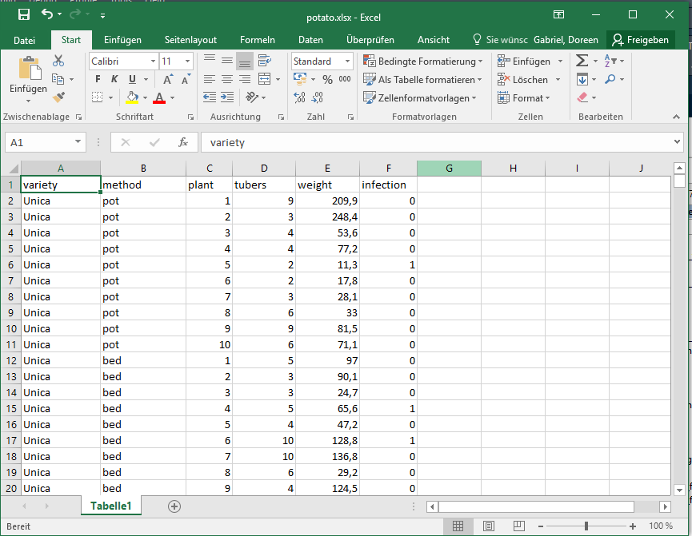
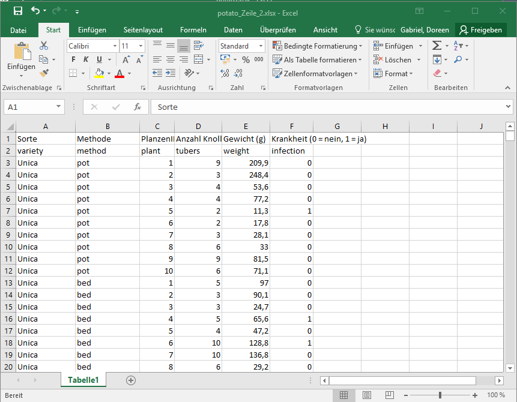
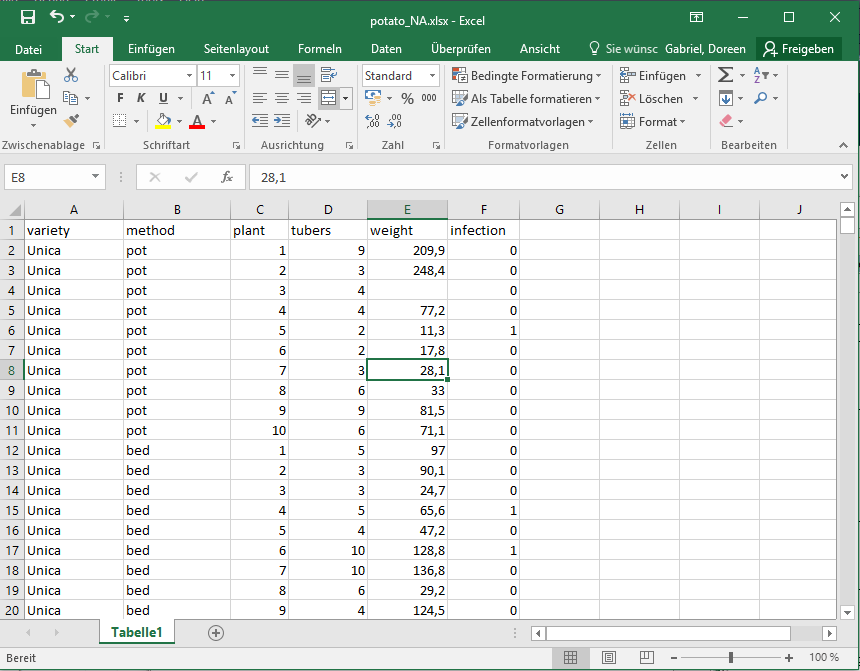

a <- 5Allgemeines
Literatur
Diese Bücher sind teilweise etwas älter (was die R-Codes anbetrifft). Sie geben aber trotzdem einen guten Einblick in die Statistik und Anwendung von R.
Crawley 2013: The R Book. 2nd Edition, E-Book unter http://onlinelibrary.wiley.com/book/10.1002/9781118448908
Crawley 2013: Statistik mit R.
Dormann 2013: Parametrische Statistik.
Burnham und Anderson 2002: Model Selection and Multimodel Inference.
James, Witten, Hastie & Tibshirani 2023: An Introduction to Statistical Learning with Applications in R. https://hastie.su.domains/ISLR2/ISLRv2_corrected_June_2023.pdf.download.html Hastie, Tibshirani & Friedman 2017: The Elements of Statistical Learning - Data Mining, Inference and Prediction https://hastie.su.domains/ElemStatLearn/printings/ESLII_print12_toc.pdf
Webseiten
- Kursskripte der vorangegangenen Inhouse-Schulungen sowie der zentralen Biometriekurse des BMEL findet ihr im Intranet http://intranet.julius-kuehn.de/forschungservice/biometrie/?L=0
- viele Tutorien im Netz und auf YouTube
- R Cookbook https://rc2e.com/
- DSFAIR von Paul Schmidt https://schmidtpaul.github.io/dsfair_quarto/
- Mailing lists und archives auf http://www.r-project.org/
- http://de.wikibooks.org/wiki/GNU_R
Hilfe in R
help.start()- Hilefeseite öffnet sich durch
?Funktionz.B.?mean - Vergleiche
?meanvs.??mean
Pakete installieren und laden
- entweder im Editor
install.packages("Paketname")z.B.install.packages("nlme") - oder über das Fenster Packages/Install und dann Name des Package z.B. nlme eintragen und Install klicken
- Laden der Pakete einmal pro Session durch die Funktion
library("Paketname")z.B.library("nlme")
Grundlagen Programmiersprache R
- R unterscheidet zwischen Groß- und Kleinschreibung
- Leerzeichen werden normalerweise ignoriert, d.h. kein Unterschied
2+5vs.2 + 5 - Kommentare werden mit # markiert und dadurch nicht als Befehl von R erkannt, sondern als Text
- Zeilenumbruch bei langen Befehlen kein Problem (ein + erscheint in der nächsten Zeile)
- Normale Rechenoperationen + - * /
- Achtung ein : bedeutet nicht “geteilt durch”! Probier es aus
10:5 log(),log10(),exp(),sqrt(),2^2,2^0.5
R ist objektorientiert
Die 5 wird dem Objekt a zugewiesen
b <- 3Die 3 wird dem Objekt b zugewiesen
c <- a + bc ist die Summe aus a und b.
c[1] 8Datentypen
Objekte können verschieden Datentypen zugehören.
- Numeric (Zahl)
- Character (Zeichenketten, z.B. “Messeweg”)
- Logical (TRUE, FALSE)
- Factor (Kategoriale Daten mit verschiedenen Levels, z.B. hoch, mittel, niedrig oder rot, blau, gelb)
Datenstrukturen
vector(eindimensionale Vektoren)matrix(zweidimensionale Matrizen)array(verallgemeinerte Matrizen mit auch mehr als zwei Dimensionen)list(Listen)data.frame(Datensätze i.e. Tabelle mit unterschiedlichen Datentypen je Spalte)function(Funktionen)
Funktionen
Beim Aufruf von Funktionen sind die Werte, die der Funktion als Berechnungsgrundlage dienen, in runde Klammern einzuschließen: z.B.
round(1.358) # runden einer Zahl[1] 1Die Argumentliste besteht aus Zuweisungen an Argumenten in der Form Argumentname=Wert, die der Funktion die notwendigen Eingangsinformationen liefern.
round(1.358, digits=1)[1] 1.4round(1.358, 1)# nur eine Kommastelle[1] 1.4Es können je nach Funktion ein oder mehrere durch Komma getrennte Argumente angegeben werden, die ihrerseits obligatorisch oder nur optional sein können. Funktionen können ineinander verschachtelt werden z.B.
round(mean(c(3,6,2,8)), digits=1)[1] 4.8Auf eine Kommastelle gerundeter Mittelwert aus den Zahlen 3, 6, 2 und 8.
Die Hilfeseite für eine Funktion öffnet sich durch ?round.
Beispiel Funktion seq und rep
seq(from = 2, to = 8, by = 2)[1] 2 4 6 8seq(from = 2, to = 8, by= 0.5) [1] 2.0 2.5 3.0 3.5 4.0 4.5 5.0 5.5 6.0 6.5 7.0 7.5 8.0seq(from = 0, to = 9, length = 4)[1] 0 3 6 9rep(1:5, times = 2) [1] 1 2 3 4 5 1 2 3 4 5rep(1:5, each = 2) [1] 1 1 2 2 3 3 4 4 5 5rep(c("A","B"), times = 2)[1] "A" "B" "A" "B"Daten einlesen
- Spaltenbenennung (Variablen) ohne Leerzeichen, keine Zahlen am Anfang, kein + - / % besser _
- kurze, prägnante Variablennamen (Stickstoffduengermenge besser ND), Objektnamen (z.B. für den
data.frameStickstoffversuchsdaten besser ndat) und Pfadnamen (ohne ä, ö & ü) - Missing Values in Excel leer lassen oder als NA in csv
Daten direkt aus Excel einlesen
Diesen Datensatz potato.xlsx können wir direkt mit der library(openxlsx) aus Excel einlesen.

library(openxlsx)
md<-read.xlsx("potato.xlsx", sheet=1)
str(md)'data.frame': 478 obs. of 7 variables:
$ variety : chr "Unica" "Unica" "Unica" "Unica" ...
$ method : chr "pot" "pot" "pot" "pot" ...
$ plant : num 1 2 3 4 5 6 7 8 9 10 ...
$ tubers : num 9 3 4 4 2 2 3 6 9 6 ...
$ weight : num 209.9 248.4 53.6 77.2 11.3 ...
$ infection: num 0 0 0 0 1 0 0 0 0 0 ...
$ humidity : num 26.1 30.2 52.5 34 49.6 ...# oder
md<-read.xlsx("potato.xlsx", sheet="Tabelle1")Solltet ihr mit RMarkdown arbeiten, dann werden die Daten (ohne Pfadangabe) aus dem Ordner in dem auch das .Rmd gespeichert ist eingelesen.
- alternativ könnt ihr den Pfad angeben:
# entweder
md<-read.xlsx("D:/R/Kartoffelversuch/potato.xlsx", sheet=1)
# oder
md<-read.xlsx("D:\\R\\Kartoffelversuch\\potato.xlsx", sheet=1)oder
- ihr setzt das working directory
- und lest dann die Daten ohne Angabe des Pfades ein
setwd("D:/R/Kartoffelversuch")
md<-read.xlsx("potato.xlsx", sheet=1)Über das Argument startRow können Zeilen übersprungen werden. Wenn bspw. die erste Zeile die ausführliche Beschreibung der Spalteninformation enthält und erst in der zweiten Zeile die kurzen prägnanten Variablennamen stehen, dann kann mit startRow=2 der Datensatz ab Zeile 2 eingelesen werden.

md<-read.xlsx("potato_Zeile_2.xlsx", sheet=1, startRow=2)
str(md)'data.frame': 478 obs. of 6 variables:
$ variety : chr "Unica" "Unica" "Unica" "Unica" ...
$ method : chr "pot" "pot" "pot" "pot" ...
$ plant : num 1 2 3 4 5 6 7 8 9 10 ...
$ tubers : num 9 3 4 4 2 2 3 6 9 6 ...
$ weight : num 209.9 248.4 53.6 77.2 11.3 ...
$ infection: num 0 0 0 0 1 0 0 0 0 0 ...Missing values in Excel leer lassen. R zeigt diese missing values als NA an. 
md2<-read.xlsx("potato_NA.xlsx", sheet=1)
head(md2)# zeigt die ersten 6 Zeilen an variety method plant tubers weight infection
1 Unica pot 1 9 209.9 0
2 Unica pot 2 3 248.4 0
3 Unica pot 3 4 NA 0
4 Unica pot 4 4 77.2 0
5 Unica pot 5 2 11.3 1
6 Unica pot 6 2 17.8 0als .csv
- in Excel ein Tabellenblatt als .csv oder .txt speichern
- funktion
read.tablefür .txt oderread.csvfür .csv mit den Argumenten:header=TRUEbedeutet, dass in der ersten Zeile die Variablenbezeichnungen stehensepist der Separator, kann Komma, Semikolon oder Tab seindecist das Dezimalzeichen, kann Komma oder Punkt seinread.csv()für englische Excel-Einstellungenread.csv2()für deutsche Excel-Einstellungen.
md<-read.csv2("potato.csv", header=TRUE)
# wenn csv unter englischen Excel-Einstellungen gespeichert wurde
md<- read.csv("potato.csv", header = TRUE, sep = ",", dec = ".")
# wenn csv unter deutschen Excel-Einstellungen gespeichert wurde
md<- read.csv2("potato.csv", header = TRUE, sep = ";", dec = ",") als .txt
md<- read.table("potato.txt", header = TRUE, sep = "", dec = ".")Dateneinlesen in R-Studio per Klick
Eine weitere Alternative bietet R-Studio auf Environment/Import Dataset. Hier kann man sich durchklicken, um Daten zu importieren. Man sollte aber unbedingt den R-Code nach erfolgtem Import ins Skript kopieren, damit man ihn in der nächsten Sitzung ausführen kann. So behält man den Überblick, welche Daten zur Analyse genutzt wurden. Außerdem können nur so auch Dritte den Import der Daten nachvollziehen. Stichwort reproducible research.
Der Datenimport aus anderen Statistikprogrammen (SPSS, Stata, SAS) ist mit dem Package foreign oder aus Datenbanken mit dem Package RODBC möglich.
Datenstruktur prüfen
Nach erfolgtem Import sollte immer die Struktur der Daten durch die Funktion str() z.B. str(md) überprüft werden.
str(md)'data.frame': 478 obs. of 6 variables:
$ variety : chr "Unica" "Unica" "Unica" "Unica" ...
$ method : chr "pot" "pot" "pot" "pot" ...
$ plant : num 1 2 3 4 5 6 7 8 9 10 ...
$ tubers : num 9 3 4 4 2 2 3 6 9 6 ...
$ weight : num 209.9 248.4 53.6 77.2 11.3 ...
$ infection: num 0 0 0 0 1 0 0 0 0 0 ...Wir sehen hier, dass die Sorte und Methode als Character eingelesen wurde und alle anderen Spalten numerisch sind. Schaut bitte zum Kapitel [Beispieldatensatz potato.xlsx], wie Character in Faktoren umgewandelt werden.
Mit den Funktionen head()und tail() lässt man sich die ersten und letzten 6 Zeilen des Datensatzes anzeigen.
head(md) variety method plant tubers weight infection
1 Unica pot 1 9 209.9 0
2 Unica pot 2 3 248.4 0
3 Unica pot 3 4 53.6 0
4 Unica pot 4 4 77.2 0
5 Unica pot 5 2 11.3 1
6 Unica pot 6 2 17.8 0tail(md) variety method plant tubers weight infection
473 Costanera aeroponic 5 7 22.7 0
474 Costanera aeroponic 6 5 38.4 1
475 Costanera aeroponic 7 3 28.4 0
476 Costanera aeroponic 8 6 29.1 1
477 Costanera aeroponic 9 4 17.6 0
478 Costanera aeroponic 10 7 36.9 0Datenexport
Wir können die Daten exportieren.
- mit dem Package
openxlsx:
library(openxlsx)
write.xlsx(md, "potato.export2.xlsx")Das Package openxlsx bietet die Möglichkeit, unterschiedliche Datensätze in mehreren Tabellenblättern in einer xlsx-Datei zu speichern. Hier mal exemplarisch, indem wir den potato-Datensatz mit einer summary statistics (siehe Kapitel Deskriptive Statistik) in zwei Tabellenblättern in einer Datei speichern.
library(dplyr)
md.sum=md %>% group_by(variety, method) %>%
summarise(weight_avg=mean(weight, na.rm = TRUE),
weight_sd=sd(weight, na.rm = TRUE))
md.sum# A tibble: 12 x 4
# Groups: variety [3]
variety method weight_avg weight_sd
<chr> <chr> <dbl> <dbl>
1 Costanera aeroponic 40.2 16.6
2 Costanera bed 87.5 32.6
3 Costanera hydroponic 25.1 8.17
4 Costanera pot 141. 22.2
5 Mariva aeroponic 95.4 54.8
6 Mariva bed 96.8 54.8
7 Mariva hydroponic 14.3 9.34
8 Mariva pot 92.2 27.4
9 Unica aeroponic 88.5 70.8
10 Unica bed 69.1 36.4
11 Unica hydroponic 26.3 14.1
12 Unica pot 94.6 60.3 wb <- createWorkbook()
addWorksheet(wb, sheetName = "Kartoffeldaten")
writeData(wb, "Kartoffeldaten", md)
addWorksheet(wb, sheetName = "summary statistics")
writeData(wb, "summary statistics", md.sum)
saveWorkbook(wb, file = "potato.export3.xlsx", overwrite = TRUE)Datenformat
Das flat format ist gegenüber dem wide format zu bevorzugen.
Bsp. flat format
| Behandl | Ertrag |
|---|---|
| N0 | 3.5 |
| N0 | 1.5 |
| N0 | 2.8 |
| N0 | 3.1 |
| N100 | 6.4 |
| N100 | 7.4 |
| N100 | 5.8 |
| N100 | 5.4 |
| N200 | 5.9 |
| N200 | 8.4 |
| N200 | 7.7 |
| N200 | 6.7 |
Bsp. wide format
| Kontrolle | N-Level 100 | N-Level 200 |
|---|---|---|
| 3.5 | 6.4 | 5.9 |
| 1.5 | 7.4 | 8.4 |
| 2.8 | 5.8 | 7.7 |
| 3.1 | 5.4 | 6.7 |
R kann vom wide zum flat format (und zurück) konvertieren, z.B. mit der Funktion melt aus der library(reshape2). Siehe auch http://www.cookbook-r.com/Manipulating_data/Converting_data_between_wide_and_long_format/.
Übung 1
Die Körpergröße, Schuhgröße, Geschlecht und Augenfarbe von Kursteilnehmer wurde ermittelt. Importiere bitte die Daten Kursteilnehmer.xlsx in R und benenne den data.frame mit md.
Lernt die Daten und folgende Funktionen kennen:
- str(md)
- names(md)
- head(md)
- tail(md)
- md[,]
- md[1,]
- md[,3]
- md[,-3]
- md[1:3,]
- md[,1:3]
- md[2,2:4]
- md[,c(2,4)]
Ende Übung 1